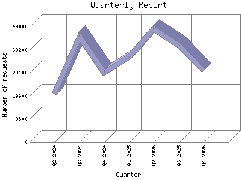

Analog 5.24
Analog 5.24 Report Magic for Analog 2.13
Report Magic for Analog 2.13The Quarterly Report shows total activity on your site for each quarter of a
year. Remember that each page hit can result in several server requests as the
images for each page are loaded.
Note: Most likely, the first and
last quarters will not represent a complete quarter's worth of data, resulting
in lower hits.

| Quarter | Number of requests | Percentage of the requests | |
|---|---|---|---|
| 1. | Q4 2025 | 30,127 | 12.7% |
| 2. | Q3 2025 | 40,807 | 16.34% |
| 3. | Q2 2025 | 48,072 | 19.24% |
| 4. | Q1 2025 | 36,090 | 14.46% |
| 5. | Q4 2024 | 29,534 | 11.82% |
| 6. | Q3 2024 | 44,616 | 17.87% |
| 7. | Q2 2024 | 20,495 | 8.20% |
Most active quarter Q2 2025 : 48,072 requests handled.
Quarterly average: 35677 requests handled.
This report was generated on November 17, 2025 01:09.
Report time frame April 8, 2024 11:04 to November 16, 2025 04:46.
| Web statistics report produced by: | |
| Analog 5.24 | Report Magic for Analog 2.13 |